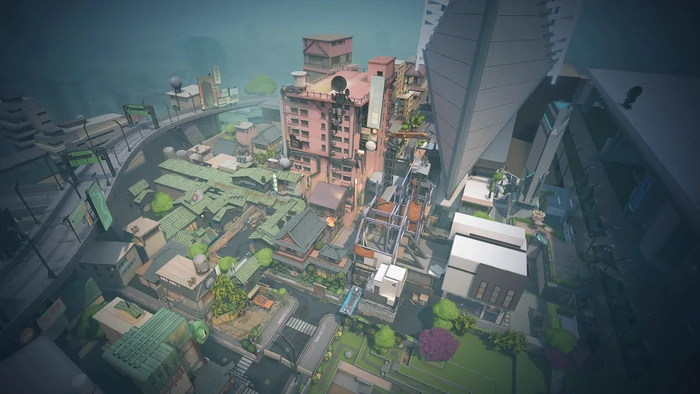

Split is located in the
district Shinjiku of
Tokyo, Japan. This
place was once abundant in culture, until the Kingdom organization took over. Split is divided into two halves
that are vastly different. One side has a futuristic design, mainly influenced by Kingdom, while the other still
has some remnants of the vintage Japanese culture that used to be. This side, however, is being developed, making
it transition into a more futuristic look which in return slowly rids of the culture. On this map we would see a
couple of posters and pictures showing messages that are against this development by Kingdom, some saying lines
like “Take back our home”. This emphasizes the anti-kingdom movement of those living in this area ((Wiki Targeted
(Entertainment), n.d.) .
BEST AGENT COMBOS
Split is quite a huge map, requiring players to assume roles to secure every area here. Because of this, it would
be best to have at least 1-2 sentinel players. Sentinel agents are equipped with tools to help gather information
on the enemy while securing/anchoring down areas. From my experience, agents like Cypher or Killjoy paired with
Sage makes a great sentinel duo. Cypher and Killjoy are agents equipped with traps to help secure sites and gather
information while Sage is a healer who also has abilities such as a wall and slow orbs which are used to slow down
enemies. Well what if you’re placed on the attacking team? For this you would need at least 1 duelist player. A
duelist agent’s role is to enter and engage in enemy territory first, giving the team an opening to pursue a site.
Since the map has tall, huge, and parkour-like features, an agent like Raze who is known to be good at traversing
tall areas and has quite an explosive skill set. But what if your team was entering a site and then boom, a sniper
from a high vantage point eliminates one of your teammates? For this we have controller agents. Controller agents
are supposed to cut off enemy vision, helping the team take full control of an area. They could also force enemies
into chokepoints or tight areas. Chokepoints are areas where the player must pass through a dangerous area in
order to advance. For this role, we can assign the agent Omen. Omen has the ability to cast shadows which cuts off
enemy vision. Omen also has a similar ability that blinds the enemy for a limited amount of time. To top it off,
Omen also has the ability to teleport around the map. An alternative to Omen would be the agents Viper, Brimstone,
or Astra.
SPLIT'S MAP LAYOUT
This map features two planting sites called A and
B. A and B are connected by a mid section. In this mid section there are four entrances. One from a ramen shop, a
sewer area, a vent, and a mail area that leads into a tower. In site A we see a train station, a cafe shop, and a
platformed area. This place is mostly underdevelopment but has already gotten rid of the Japanese aesthetics and
designs that were said to be prevalent. On the other hand, site B has sort of an opposite feel and theme. The
Japanese homes and buildings still remain but are slowly being developed to look like those of Kingdom’s. This
contrast is the same for the defenders and the attackers spawn. The defenders spawn has Kingdom’s designs with a
little bit of Japanese while the attackers spawn is the opposite. The features and layout of this map enables the
players to become more creative with how they play by using unique structures and paths ((Wiki Targeted
(Entertainment), n.d.).
Like everything, Valorant progresses and changes as time moves on. As of right now, there are 20 agents
and 8 playable maps. However, Split is not included in the active map pool, meaning that it would not be
available in unrated and competitive play but it could still be played in-game for modes like escalation,
replication, and custom games. According to Jadhav of Talkesport (2022), this decision was made to maintain a
7-map pool. A number like this would make it less overwhelming for new players to get into the game, while it
would make it easier for map picks in professional tournaments. This does seem like a good decision but Split
is one of the oldest maps in the game. It would be like deleting an archive of artwork from the renaissance
period. Fortunately, Riot stated that Split would eventually make a return in the map pool. This would be done
by circulating the maps in and out, maintaining a 7-map pool (Jadhav, 2022). As we wait for Split to make a
return, let us remember the good times we’ve had with Split.
